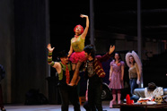
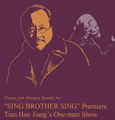
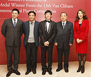
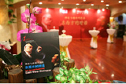

摩根士丹利贊助2014年北京國際音樂節情定孤島——理查• 施特勞斯獨幕歌劇《阿裡阿德涅在拿索斯島》
摩根士丹利於10月20日為第十七屆北京國際音樂節之情定孤島——理查• 施特勞斯獨幕歌劇《阿裡阿德涅在拿索斯島》提供贊助，這已是摩根士丹利連續第八年贊助此音樂盛事。本次音樂節也是這部問世百年的理查• 施特勞斯經典劇目在中國的首演。德國指揮家馬提亞斯• 福曼尼率領中國愛樂樂團與來自萊比錫歌劇院的優秀歌唱家們一道，為中國歌劇舞台揭開新的一頁，把以紀念施特勞斯誕辰150周年為主題的本屆音樂節推向高潮。
摩根士丹利贊助2013年北京國際音樂節“重想”瓦格納—爵士鋼琴家尤瑞 •肯恩及爵士六人組專場音樂會
 摩根士丹利於10月13日為第十六屆北京國際音樂節之“重想”瓦格納—爵士鋼琴家尤瑞 • 肯恩及爵士六人組專場音樂會的演出提供贊助。在2013年的第十六屆北京國際音樂節期間，爵士鋼琴家尤瑞 • 肯恩帶給本屆北京國際音樂節非比尋常的瓦格納獻禮音樂會。兩年前，肯恩曾成功演繹爵士版的馬勒作品，此次他與天狼星四重奏成員、手風琴家特德 • 賴希曼一起合作，吸取瓦格納的管弦樂織體、無盡的旋律和復雜的和聲的精華，將它們冶於一爐並創新打造的爵士版瓦格納。
摩根士丹利於10月13日為第十六屆北京國際音樂節之“重想”瓦格納—爵士鋼琴家尤瑞 • 肯恩及爵士六人組專場音樂會的演出提供贊助。在2013年的第十六屆北京國際音樂節期間，爵士鋼琴家尤瑞 • 肯恩帶給本屆北京國際音樂節非比尋常的瓦格納獻禮音樂會。兩年前，肯恩曾成功演繹爵士版的馬勒作品，此次他與天狼星四重奏成員、手風琴家特德 • 賴希曼一起合作，吸取瓦格納的管弦樂織體、無盡的旋律和復雜的和聲的精華，將它們冶於一爐並創新打造的爵士版瓦格納。
摩根士丹利贊助2012年北京國際音樂節“重返未來—美國巨星邁克爾 • 波頓”音樂會
 摩根士丹利於11月1日在十五屆北京國際音樂節期間為“重返未來—美國巨星邁克爾 • 波頓”音樂會演出提供贊助。
摩根士丹利於11月1日在十五屆北京國際音樂節期間為“重返未來—美國巨星邁克爾 • 波頓”音樂會演出提供贊助。
對藝術的支持一直是摩根士丹利全球公益事業的重點之一。我們深信分享藝術體驗能夠增進文化的融通。我們希望通過對北京國際音樂節積極與不懈的支持，將更多國際一流的藝術表演帶給中國觀眾。今年，我們為大家帶來的是美國巨星邁克爾 • 波頓的“重返未來”音樂會。該場表演匯集了《靈魂主宰》、《祈禱》等邁克爾 • 頓的眾多經典歌曲。作為美國流行樂壇的傳奇歌手，邁克爾 • 波頓自上世紀80年代便以其富有深情的歌聲打動了全球聽眾。他曾多次獲得格萊美音樂獎，並擁有全球專輯及單曲銷量超過5300萬張的佳績。作為社會活動家及慈善人士，邁克爾 • 波頓以人文關懷為主題進行歌曲創作，並成立了自己的基金會“邁克爾 • 波頓慈善基金”，致力於消除美國婦女和兒童所面對的暴力侵害。聽眾可以從音樂會所選曲目當中真切感受到他對人的關懷與同情之心。
摩根士丹利贊助“田浩江個人舞台劇《我歌我哥》全球首演”
摩根士丹利於2012年5月25日在第十二屆“相約北京”聯歡活動間為“田浩江個人舞台劇《我歌我哥》全球首演”提供贊助。
摩根士丹利為大家帶來的是田浩江先生的個人舞台劇《我歌我哥》，田浩江先生的藝術生涯具有傳奇色彩，是當今舉世公認的最具才華的男低音歌唱家之一，這次5月25日田浩江先生在國家大劇院演出的舞台劇《我歌我哥》是全球首次演出。這部由田浩江先生創作並出演的劇目將敘事性的話劇和歌唱巧妙結合，無疑是此次演出中的一個亮點。
摩根士丹利贊助2011年北京國際音樂節“神奇的號角-安妮·蘇菲·馮·奧特藝術歌曲獨唱音樂會”
摩根士丹利於2011年10月27日在十四屆北京國際音樂節期間為“神奇的號角-安妮·蘇菲·馮·奧特藝術歌曲獨唱音樂會”的演出提供贊助。
今年，摩根士丹利為大家帶來的是“神奇的號角-安妮·馮·奧特藝術歌曲獨唱音樂會”，其中包括馬勒根據德國民謠改編的一系列歌曲。表演者安妮·馮·奧特被認為是當代最受歡迎的女中音歌唱家，這次演出也是安妮·馮·奧特在中國的首次演出，各位喜愛馬勒作品的聽眾一定能通過她的演繹充分享受這場音樂會。此次演出的另一個看點是安妮·馮·奧特與瑞典鋼琴家赫特·福爾斯伯格的攜手合作。藝術歌曲的演繹需要獨唱與伴奏之間長期的磨合才能達到最終默契，而這兩位藝術家對藝術歌曲的演繹都有很深的造詣，其合作正可謂是祝珠聯璧合。
摩根士丹利贊助2010年北京國際音樂節“羅梅羅吉他四重奏”音樂會
 摩根士丹利於2010年10月26日在十三屆北京國際音樂節期間為“羅梅羅吉他四重奏”音樂會的演出提供贊助。我們向北京音樂節的藝術成就致敬，並為我們連續四年能為這一盛事提供支持感到榮幸。
摩根士丹利於2010年10月26日在十三屆北京國際音樂節期間為“羅梅羅吉他四重奏”音樂會的演出提供贊助。我們向北京音樂節的藝術成就致敬，並為我們連續四年能為這一盛事提供支持感到榮幸。
對藝術的支持一直是摩根士丹利全球公益事業的重點，我們相信分享藝術將會增進文化交流和融通。我們希望通過對北京國際音樂節積極與不懈的支持，將更多國際一流的藝術表演和音樂體驗帶給中國觀眾。
“羅梅羅”即為這種體驗中的精品。三代同台並享有“吉他皇室家族”美譽的羅梅羅吉他四重奏自創立以來享譽世界古典樂壇四十余年。羅梅羅吉他四重奏此次為聽眾呈現著名作曲家羅德裡戈(Joaquín Rodrigo) 和比才(Georges Bizet) 的作品。
摩根士丹利中國區首席執行官孫瑋在音樂會前的酒會上一起歡迎60余位摩根士丹利的嘉賓客人。孫瑋表示，“作為一家擁有75周年卓越歷史的全球金融服務機構，我們相信羅梅羅音樂世家的歷史積澱也充分彰顯了摩根士丹利的悠久歷史。”
演出獲得熱烈好評，演奏家應觀眾要求表演了三次謝幕演奏，觀眾們長時間起立鼓掌並久久不願離席。
摩根士丹利贊助北京國際音樂節“新秀初綻”音樂會
摩根士丹利日前贊助了中國頂尖古典音樂盛事——第十二屆北京國際音樂節的一場標志性音樂會“新秀初綻”，這是摩根士丹利連續第三年贊助該音樂節。
在2009年10月19日的演出中，天才音樂家張昊辰演奏了肖邦、李斯特和普羅科菲耶夫的作品，北京交響樂團傾情伴奏。這位年僅19歲的中國神童是范•克萊本國際鋼琴比賽新晉的金獎得主。
摩根士丹利中國區首席執行官孫瑋和北京國際音樂節創始人/藝術總監余隆在音樂會前的酒會上一起歡迎百余位摩根士丹利的嘉賓客人。
“作為一家長期為青年藝術事業和教育發展提供機會和支持的國際金融機構，摩根士丹利深信，在藝術領域有獨特天賦的年輕人應當得到鼓舞、激勵和重視。”孫瑋表示，“張昊辰無疑就是這樣一位杰出新秀。”
這位年輕鋼琴家當日為觀眾獻演了一場熱情洋溢的音樂會，贏得了觀眾的熱烈反響。
摩根士丹利贊助北京音樂節“紀念伯恩斯坦音樂會”
 2008年是摩根士丹利贊助中國頂級古典音樂盛事——第11屆北京國際音樂節的第二年。中國愛樂樂團在10月11日為“紀念伯恩斯坦音樂會”舉辦了專場演奏會。演出曲目均為美國當代著名作曲家、指揮家伯恩斯坦晚期的音樂劇作品，並由伯恩斯坦的女兒吉米•伯恩斯坦擔任講解。
2008年是摩根士丹利贊助中國頂級古典音樂盛事——第11屆北京國際音樂節的第二年。中國愛樂樂團在10月11日為“紀念伯恩斯坦音樂會”舉辦了專場演奏會。演出曲目均為美國當代著名作曲家、指揮家伯恩斯坦晚期的音樂劇作品，並由伯恩斯坦的女兒吉米•伯恩斯坦擔任講解。
摩根士丹利中國區首席執行官孫瑋和北京國際音樂節創始人/藝術總監余隆在音樂會后一起歡迎百余位摩根士丹利的嘉賓客人。
“我們相信通過舉辦文化、教育這樣的慈善活動，可以增進世界文化的溝通和理解”孫瑋說，“這場音樂會就是文化交流的最好例証。”
一部以北京國際音樂節和伯恩斯坦為素材的片花也將於美國東部時間10月21日晚7點在紐約時代廣場大屏幕亮相。
摩根士丹利贊助2007年第十屆北京音樂節
利贊助了今年第十屆北京音樂節。作為亞洲最重要的文化盛會之一，本次北京音樂節歷時一個月，其間上演了一系列精彩的節目。摩根士丹利為其中的《譚盾和Penderecki：東西方的對話》音樂會提供了特別贊助。
譚盾憑藉影片《臥虎藏龍》中的配樂獲得過第73屆奧斯卡最佳配樂獎，並且以聲音運用上的創新而聞名，他在音樂會上指揮演奏了自己的作品《秘密土地》；而以先鋒音樂語言聞名的波蘭音樂家Krzysztof Penderecki則完成了他《第八交響曲》的中國首演。
除了本次音樂會之外，公司還與音樂會聯合贊助人之一、中國頂級商業刊物《財經》雜誌共同舉辦了一場雞尾酒會，這次合作也凸顯了本次音樂會東西方對話的主題。摩根士丹利與《財經》雜誌的客戶和雙方的管理層一同出席了這次酒會。
“作為一個全球性的藝術和教育支持者，我們相信超越商業和政治的東西方對話，對於加強世界對東方，特別是中國的文化和傳統的瞭解非常重要，”摩根士丹利中國首席執行官孫瑋在她的祝詞中說到，“不論在中國或者國外，只有通過對話和瞭解，我們才能一起和互相為對方創造和諧與機遇。”
北京音樂節獲中國文化部和北京市政府的支持。在過去的10年裏，音樂節吸引了來自世界各地的藝術家和觀眾，包括“世界三大男高音”之一的卡雷拉斯以及馬友友。
摩根士丹利贊助香港藝術節《下周村》首演

香港藝術節是亞洲歷史最悠久和最受矚目的年度藝術活動之一。連續八年，摩根士丹利是香港藝術節的贊助人。今年公司再次嘗試支援創自亞洲地區的新製作，一出意念全新、由中日兩國著名戲劇藝術家攜手呈獻的《下周村》。
《下周村》是2007年香港藝術節世界首演劇碼，由北京中國國家話劇院和日本東京新國立劇場合作編制。故事以中國某偏遠的農村為背景，一個突然出土的歷史遺址引來了兩國各式人物的到來、迷思與期盼。編劇及導演通過無國界戲劇語言，以當代的視野，剖視中國與日本的文化歷史糾結。
繼三月在香港的成功演出後，《下周村》將移師北京和東京繼續公演。
摩根士丹利贊助2005年香港藝術節《琥珀》全球首演
一如既往，公司已連續6年支持亞洲的重要文化活動之一 - 香港藝術節。每年摩根士丹利都會在藝術節期間，選擇贊助一位藝術家或劇碼演出，他們都無一例外地反映了公司的核心品牌價值 - 有著無限創意、團隊精神、勇於革新、並且追求卓越。今年亦是如此 - 《琥珀》，一出新派原創的舞臺音樂話劇，是由中國劇壇最具影響力的導演孟京輝執導，中國國家話劇院傾力演出，並由金馬影帝劉燁和著名女演員袁泉領銜主演。
《琥珀》是一個以當代中國為背景的寓言故事，它剖視了關於愛與欺騙、品格與私心的人性衝突。導演孟京輝獨創的 “音樂舞臺”風格和演員們精湛的演繹，打造了一部跨越文化界限，集世界級話劇、多媒體舞臺表演和流行音樂於一身的傑作。該劇於2005年3月3日在香港作全球首演，首場演出由本公司贊助。《琥珀》在香港共演出六場，是本年度藝術節最賣座的劇碼之一。3月3日至8日在香港首演後，《琥珀》移師上海、北京和新加坡繼續巡迴演出。
摩根士丹利贊助2004年香港藝術節
作為全球藝術活動的支持者和香港藝術節的經常贊助人，摩根士丹利在快將舉行的一年一度香港藝術節，將贊助由蜚聲國際的現代舞蹈團西班牙國家舞蹈團于明年3月3日之演出 --《巴赫敘/靜寂與空虛》。選用著名音樂家巴赫的多段不同格調樂曲創作而成的《巴赫敘/靜寂與空虛》，是當今舞壇極受推崇的編舞家納曹•杜亞陶(Nacho Duato) 的又一精心傑作。
香港亞洲青年音樂家大賽
在2000至2001年期間，摩根士丹利與香港電臺及康樂及文化事務署攜手合辦「香港亞洲青年音樂家大賽」。它是區內首個旨在提供機會給青年演奏者向國際舞臺邁出第一步的古典音樂比賽。從幾百位來自亞太區不同國家的年輕音樂精英中選出二十位參加准決賽，然後再選出四位參與決賽。四位能夠躋身決賽的包括：女高音郭森(中國)、小提琴手樂薇薇(中國)、手風琴手阮氏瓊莊(越南) 和大提琴手朱琳(中國)。經過先後在2001年9月份舉行的獨唱／獨奏會和精彩無比的協奏曲決賽，以馬連拿爵士 (Sir Neville Marriner) 為首的國際評判團最後選出冠軍得主為來自越南的手風琴手阮氏瓊莊。
香港藝術節
作為推廣世界各地藝術的積極支持者，摩根士丹利已連續幾年贊助一年一度的香港藝術節表演。在2001年，我們贊助傳奇蘇聯芭蕾舞星巴瑞辛尼可夫(Mikhail Baryshnikov)及其白橡樹舞集(White Oak Dance Project) 從美國來港演出。在2002年，我們贊助由普羅科菲耶夫(Prokofiev) 改編、蘇聯布林什歌劇團(Bolshoi Theatre) 主演的著名歌劇“三個柳丁的愛情”(The Love for Three Oranges) 在港演出。
“Inside Out” - 新中國藝術

“Inside Out”為最全面展示當代中國藝術的一個大型展覽。展品為美國三藩市現代藝術博物館收藏品，當中除了由來自大中華地區和旅居西方華人藝術家所創作的兩度空間藝術品外，還包括不少藝術裝置和多媒體藝術作品。由美國亞洲協會(Asia Society)推薦、摩根士丹利贊助，“Inside Out”在2000年9月於香港藝術館展出超過兩個月。
中國交響樂團與摩根士丹利合辦“華韻” 音樂會
在1999年，中國交響樂團與摩根士丹利攜手合作，為中國交響樂原創作樂曲發展寫下新的一頁。我們組織和贊助在國內舉辦青年古典音樂作曲家徵曲大賽，比賽反應熱烈。經過一輪激烈的競爭，一輯獨一無二的精選的原創作品“華韻”宣佈誕生，並交由中國交響樂團在音樂會上演奏。中國交響樂團於2000年度香港藝術節表演中也有演奏其中的一些作品。